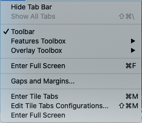

View Menu
The View Menu
controls display options for the Workbench
Window (Toolbar, Toolboxes, Tabs):
- Toolbar turns on/off the toolbar
above the Viewing
Area. If there is a checkmark to the left
the Toolbar
is currently on.
- Features Toolbox >
Placement options for the Features
Toolbox: Attach to Right/Detach/Hide.
- Overlay Toolbox > Placement
options for the Overlay
Toolbox: Attach to Bottom/Attach to
Left/Detach/Hide.
- Enter/Exit Full Screen expands
the Viewing Area to take up the entire screen. All Toolbars,
Toolboxes, etc. are hidden. The Esc key exits Full
Screen. The shortcut for Enter
Full Screen is Command/Ctrl
+ F.
- Enter/Extit Tile Tabs switches
the Viewing Area from displaying one Viewing Tab at a time to
a configuration that can display multiple Viewing Tabs at
once. Viewing Tabs are shown in Tile Tabs left to right, and
in one or more rows, in the order of their arrangement in
normal viewing configuration. See Viewing
Tabs to learn how to change the order of the
tabs. The Esc key exits Tile Tabs. The shortcut for Enter Tile Tabs is Command/Ctrl + M.
- Gaps
and Margins > Enables adjustment
of gaps in a surface or volume montage and margins around tab
regions
- Enter/Exit Tile Tabs switches the
Viewing Area from displaying one Viewing Tab at a time to a
configuration that can display multiple Viewing Tabs at once.
Viewing Tabs are shown in Tile Tabs left to right, and in one
or more rows, in the order of their arrangement in normal
viewing configuration. See Viewing
Tabs to learn how to change the order of the
tabs. The Esc key exits Tile Tabs. The shortcut for Enter Tile Tabs is Command/Ctrl + M.
- Edit
Tile Tabs Configuration > Automatic
and custom display configuration options for Tile Tabs
viewing. The default is to display all of the Viewing Tabs
open in that Workbench Window. Full details on these options
and how to setup custom Tile Tabs views in Tile
Tabs Configuration.
- Tile Tabs Configuration Mode
> Displays a menu for selection of Automatic or Custom
modes for tab layout when Tile Tabs is enabled.
Automatic creates a layout that displays all tabs in the
window. Custom selects a mode that allows the user to
setup the layout out the tabs in the window in rows and
columns in addition to "stretch factors" for special sizing of
the rows and/or columns. "***" in the Custom item
indicates that the number of tabs in the window exceeds the
number of tabs displayed by the Custom Configuration.
- Load Custom With User Configuration
> A menu that lists all of the user's Tile Tabs
Configurations. If one is selected, the Tile Tabs
Configuration mode is set to Custom and selected User
Configuration is loaded into the Custom Configuration.
